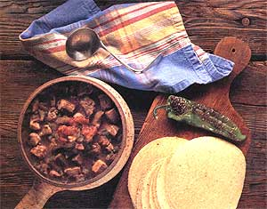

Take the chill off autumn evenings with a rich, meaty stew.
ON WEEKENDS WE SLEEP LATER, move slower, breathe deeper. We catch up with small chores, with last week's newspapers, with each other. We have time for food that can't be hurried: for bread that needs to rise, meat that needs to marinate, stews that need to simmer. And we have all afternoon to savor the rich, warm aromas that fill the house.
Stews are not fast food, at least not in their initial preparation. Because the meat must flavor a large volume of liquid, it needs to cook longer than is strictly required for doneness. But recipes can be doubled and the extra portions refrigerated or frozen, then reheated quickly on a fast-paced weeknight. Since most stews improve after sitting awhile, complaints about leftovers are rare.
Anyone who can boil water can add some meat and vegetables and end up with a stew. Of course, boiling hasn't always been so easy. While some prehistoric cook could have discovered the process of roasting by accidentally dropping a piece of meat in the fire, hot water is rare in nature. Since producing it requires containers that are both heatproof and waterproof, archaeologists long assumed that the stewing of food had to await the invention of pottery. But it now appears that humans boiled food earlier, in the shells of tortoises, turtles and large mollusks, or by digging a hole, lining it with overlapping flat rocks and clay to prevent leakage, filling it with water, and dropping in stones heated in the fire. As the food cooked, more hot rocks were added to keep the temperature high.
These days, boiling is so basic a skill that the inability to do it is the hallmark of culinary incompetence. ("I don't know how he survives; he can't even boil water.") And, in fact, timing and temperature control are less important than in baking and frying. Oil, for example, can vary widely and dangerously in temperature; maintaining an even heat requires a good thermometer and constant attention. On the other hand, water boils at 212°F, and no matter how long or how hard it boils, it will never get any hotter. (Actually, the boiling point may vary by a degree or two with passing high- or low-pressure fronts, and it drops about two degrees for every 1,000 feet of elevation above sea level. But the principle that the boiling point is the peak temperature remains true.) In short, it's hard to burn a stew without evaporating all the liquid in the pot-which requires remarkable negligence or spectacular distractions.
As food scientist Harold McGee has pointed out, the heat threshold of water explains why the first step in stew making is to brown some of the ingredients in oil. The molecular chain reaction we know as browning, which produces rich, intense flavors, is triggered at about 310°F. With a maximum temperature of 212°, boiled food will remain forever pale and bland. Meat, flour, and vegetables such as onion and garlic should be browned in hot fat before any liquid is added to the pan and effectively stops the browning process. If browning is done in a separate frying pan, the skillet should be deglazed with some of the stewing liquids, to get all the rich flavors. ("Deglazing" means transferring the meat and vegetables to the stewpot, adding some stewing liquid to the frying pan, scraping up any brown bits remaining on the bottom, then pouring the liquid into the stewpot.)
The recipes that follow are based on a variety of meats-beef, pork, chicken, lamb and wild game. All will provide warm, hearty fare for cool weekend nights.
Cider Stew
3 tablespoons flour 1 1/2 teaspoons salt 1/4 teaspoon pepper 1/4 teaspoon dried thyme 2 pounds stew beef, cut into 2-inch cubes 3 tablespoons vegetable oil 2 cups apple cider 1/2 cup water 2 tablespoons cider vinegar 2 medium onions, sliced 3 medium potatoes, peeled and thickly sliced 4 medium carrots, peeled and cut into logs 1 rib celery, sliced 3 medium parsnips, scraped and sliced, or 1 turnip, peeled and coarsely chopped 1/4 cup chopped parsley
Mix flour, salt, pepper and thyme on a plate. Dredge meat in seasoned flour. Heat oil in large kettle or Dutch oven. Working in batches, brown meat thoroughly. Drain off fat, then return meat to pan. Add cider, water and vinegar, scraping up any bits which have stuck to bottom of pan. Cover, bring to a boil, then simmer about 1 1/4 hours or until meat is almost tender. Add onions, potatoes, carrots, celery and parsnips. Cover and simmer another 30 minutes or until vegetables are tender. Sprinkle in parsley, stir well, and serve. Serves 6.
Chicken Peanut Stew
This stew, of African origin, does not keep well, so make enough just to eat the day it is made.
2 chickens, cut into pieces* 3/4 cup peanut oil** 2 large onions, chopped 1/4 cup tomato paste 2-3 tomatoes, peeled and coarsely chopped 1 teaspoon salt 1 cup peanut butter 1 small cabbage, chopped 3 sweet potatoes, cut into chunks 6 carrots, cut up 6 turnips, cut up 12 okra, cut up 1 chile pepper, or 1/2 teaspoon cayenne
Brown chicken in hot oil in large, heavy pot. Add half the onion and stir until golden brown. Thin tomato paste with about half a cup of water, and add paste and tomatoes to pot.
Boil 4 cups water, and pour that into pot as well, along with salt. While mixture boils gently, thin peanut butter with some of the hot pot liquid and stir it in gradually. Reduce heat and simmer for half an hour. Then begin adding the vegetables, letting each simmer for 5 minutes or so before putting in the next one. Cook until chicken and all vegetables are tender.
Meanwhile, crush or grind the second onion with the pepper. Add during last 10 minutes of cooking.
*If desired, chicken may be skinned and cut from the bone, for easier eating.
**Our test cook halved the amount of oil, with good results.
Beer-Drinkers' Stew
Alaskan Gordon R. Nelson explains the origin of his recipe: "This is a peppy but not overpowering stew that requires plenty of cold beer. The friend who first served it to me also made the beer we drank. On the morning of the third day I spent at his house, he sobered up long enough to scratch the stew recipe on a paper sack, just before I caught a plane home. He didn't name it, so I did my best."
3 pounds stew meat (moose, venison, beef, what-have-you), cut into 1-inch cubes 1 tablespoon cider vinegar 1 tablespoon lime juice (lemon's OK too, what the heck) 1 tablespoon chili powder 1 12-ounce can V-8 juice 2 tablespoons salad oil 2 cups thinly sliced onions 1/4-ounce can green chiles 2 cloves garlic, minced fine 1 tablespoon fresh ginger, minced 1/4 teaspoon ground turmeric 1 1/2 teaspoons salt 1 15ounce can tomatoes
Combine vinegar, lime juice, chili powder and V-8 juice in bowl. Add meat and marinate 20 minutes. Stir occasionally.
Heat oil in large frying pan or Dutch oven, and saute onions, chiles and garlic over low heat. When onions are translucent, add ginger, turmeric and salt. Mix well and add tomatoes, breaking them with a spoon. Next add meat and marinade to the pan and simmer, stirring often, 1 1/2 hours. Add water if more liquid is necessary. When meat is tender, the stew is done.
Serve straight from the pan to deep bowls, accompanied by hard rolls and beer. Serves 6. With beer!
Brunswick Stew
2 medium chickens, cut up
2 pounds beef shin bones 1 ham bone 1 squirrel, cut up 3 quarts water 1/2 cup sugar 1 bay leaf 1 teaspoon dried basil 2 tablespoons chopped fresh parsley 2 onions, sliced 4 cups peeled, chopped fresh tomatoes (or 2 1-pound cans) 2 cups chopped celery with tops 2 cups butter beans or baby limas 4 large potatoes, peeled and cut up 2 cups cut okra 4 cups corn 1/2 cup (1 stick) butter 1 pod red pepper, crushed, or 1/4-1/2 teaspoon crushed 1 teaspoon black pepper Salt to taste
In large soup kettle, combine chickens, beef bones, ham bone, squirrel, water, sugar, bay leaf, basil and parsley. Bring to boil, reduce heat, and simmer until meat falls from bones (2 hours or so). Remove bones and meat from broth, and set aside to cool. To the pot add onions, tomatoes, celery, beans and potatoes.Cook over low heat until vegetables are tender, about another 45 minutes to an hour, stirring frequently. When meat is cool, remove from bones and cut into pieces. Add to stew, then add corn and okra. Simmer until tender, then stir in butter, red pepper and black pepper, adding salt to taste. Stir constantly for 15 minutes or until mixture is thick and mushy. Serves 10.
Green Chile Stew With Pork
Jeff Smith, better known as "the Frugal Gourmet," put this recipe together from memory, in an attempt to duplicate a Pueblo stew he and his wife, Patty, were particularly fond of. "Patty and I serve this with a big green salad and a pile of wheat tortillas," he says. "Then we take the telephone off the hook!"
3 pounds boneless pork, cut into 1/2-inch cubes 3 tablespoons peanut oil 3 stalks celery, chopped 2 medium tomatoes, diced 7 green chiles, roasted, peeled and chopped* 4 cloves garlic, peeled and crushed
Homemade chicken stock or canned chicken broth or water to cover (not bouillon) Salt to taste La Victoria brand salsa jalapeno (if you dare)
Brown pork in oil, doing so in 2 or 3 batches. (If you have one, use a large black frying pan so the meat will brown quickly.) Place the meat in a 3- or 4-quart covered oven casserole, and add celery, tomatoes, chiles and garlic. Deglaze frying pan with chicken broth or water and add to the pot. Barely cover the ingredients with chicken broth or water. Broth may make this too rich for you, so you might try just water or half of each. Cover and simmer until stew is thick and the meat very tender, about 1'/z hours. Add salt to taste before serving. If the stew is not hot enough for you, add a bit of La Victoria salsa jalapeno. This is wonderful, but be careful. It's hot!
Pueblo tradition calls for the addition of corn or potatoes to this dish, but many people prefer it without. It makes a wonderful filling for enchiladas.
*To roast chile peppers, place whole pepper directly on gas burner on high heat, or place as close as possible to hot broiler. Roast until pepper is blistered and blackened, then wrap in damp paper towel for 10 minutes. Slip skin off by pulling downward from the stem end. Scrape off any remaining black specks with a paring knife.
Irish Stew
This traditional dish consists of layers of lamb, potatoes and onions; the layers mix when you ladle out a serving.
6 medium potatoes, peeled and thickly sliced 3 large onions, peeled and sliced 3 pounds lean boneless lamb shoulder, cut into 1-inch cubes 3 tablespoons chopped fresh parsley 1 teaspoon dried thyme Salt and pepper to taste Water to cover
In a large, ovenproof casserole, arrange half the potatoes in a layer, and cover with half the onions. Add all the lamb pieces, and sprinkle with seasonings. Add the remaining onions, and top with the rest of the potatoes. Season with salt and pepper, and add water to cover. Cover and bake at 300° F for 2 to 2'/2 hours or until meat is tender. Serves 6.
Rabbit and Wine Stew
2 tablespoons oil
1 2 1/2 - or 3-pound rabbit, cleaned and cut up
Salt and pepper to taste
1 pound mushrooms
1 pound small white onions
1 tablespoon finely chopped garlic
1 1/2 cups red wine
1/2cup chicken stock
1 tablespoon tomato paste
2 tablespoons chopped fresh parsley
1/2 teaspoon dried thyme
1 bay leaf
Heat oil in large saucepan or Dutch oven. Sprinkle rabbit pieces with salt and pepper, and brown lightly on all sides. Drain off fat and add mushrooms, onions and garlic; cook about 5 minutes, stirring constantly. Add remaining ingredients, bring to boil, and simmer about 45 minutes, or until rabbit is tender. Serves 4.
Mulligatawny Stew
2 medium onions,
sliced 1/2 cup carrots, sliced
1/2 cup celery, sliced
3 tablespoons butter
1 3 1/2- to 4-pound chicken, cut up
1 cup yogurt
1 tablespoon curry powder
1 clove garlic, minced
1 teaspoon turmeric
2 teaspoons salt
2 quarts water
1/2 cup coconut, to garnish
In large stewpot, saute onions, carrots and celery in butter until translucent. Add chicken and cook about 20 minutes, turning the pieces occasionally until they turn a golden brown. Stir in yogurt, curry powder, garlic, turmeric and salt, and cook another 20 minutes. (Be careful; the yogurt mixture can burn, so stir now and then, and lower the heat, if needed.) Add water, cover, and simmer 1 hour, or until chicken is very tender.
Remove chicken pieces from the pot, pull the meat off the bones, cut it into bite-size chunks, and return them to the pot. Reheat stew if necessary. Garnish each serving with a sprinkle of coconut. Serve with boiled rice, if desired. Serves 8.
CIDER STEW RECIPE FROM FARMERS MARKET COOK BOOK. BY SUSAN F CARLMAN, PUBLISHED BY CHICAGO REVIEW PRESS AND DISTRIBUTED BY INDEPENDENT PUBLISHERS GROUP, INC, CHICKEN PEANUT STEW RECIPE FROM THE AFRICA NE WS SERVICE COOKBOOK. ED. BY TAMI HULTMAN, © 1985 BY AFRICA NEWS SERVICE, INC, REPRINTED BY PERMISSION OF VIKING PENGUIN. INC.; BEER DRINKERS' STEW RECIPE FROM SMOKEHOUSE BEAR . MORE ALASKAN RECIPES AND STORIES. BY GORDON R. NELSON, ALASKA NORTHWEST PUBLISHING COMPANY, GREEN CHILE STEW WITH PORK RECIPE FROM THE FRUGAL GOURMET COOKS AMERICAN. BY JEFF SMITH, 19876YFRUGAL GOURMET, INC. REPRINTED BY PERMISSION OF WILLIAM MORROW, INC.
|
|
|
 |